Type II Supernovae#
Type II core-collapse supernovae (CCSNe) are the explosions of massive stars that retained at least part of their hydrogen envelope. Type IIP events are the explosions of hydrogen-rich stars: an early cooling-phase decline (from the initial shock breakout) settles onto a weeks-to-months-long luminosity “plateau” as a recombination front recedes through the ejecta, followed by a radioactive tail powered by \(^{56}\mathrm{Co}\) decay. A subset show a brighter, hotter, faster early excess on top of this, attributed to shock breakout through and/or collisional heating of close circumstellar material, like the prototypes SN 2023ixf and SN 2024ggi. The Type IIP model is a plateau and radioactive tail with a cooling blackbody photosphere whose UV is suppressed by line blanketing, calibrated against the ASAS-SN luminosity function, Swift/UVOT light curves and optical bolometric light curves and temperatures. The events with an early excess from confined circumstellar material (CSM) are 36% of the same population, drawn from it with a switch and a few parameters that apply to them only. Type IIb events, which lost most but not all of their hydrogen, are modeled as the sum of a shock cooling flash and a radioactively powered main peak. Each is implemented as its own transient population in a tab below. (Hydrogen-free Type Ib and Ic supernovae are covered on the Type I page.)
Implemented by TypeIIPSNe, pairing
TypeIIPSED with the rate/duration metadata
described below. A fraction of the population, 36% by default, has a brighter early excess from a confined shell
of CSM, like SN 2023ixf and SN 2024ggi (IXF/GGI-like objects). The same model describes them, with a switch
(the parameter csm) and a few parameters that apply to those events only (see the SED Model below), so that
they are not a separate population.
Quick Facts
Quantity |
Value |
Source |
Notes |
|---|---|---|---|
Rate |
\(R_\mathrm{CC}(z) = k\,\psi_\mathrm{UV}(z)\); Type IIP 48.7% of \(R_\mathrm{CC}(z)\) |
Strolger et al.[1], Madau and Dickinson[2], Li et al.[3], Shivvers et al.[4] |
Tracks the cosmic star-formation history. Li et al.[3] find II-P is
\(69.9^{+5.1}_{-5.8}\%\) of the Type II rate, which is itself
\(69.6\pm6.7\%\) of the total core-collapse rate [4], so
the Type IIP fraction of the CC rate is \(0.699\times0.696=0.487\). This chain,
combined in quadrature with the \(+27\%/-31\%\) uncertainty on
Strolger et al.[1]’s \(k\), gives
|
Redshift limit |
\(z = 1.07\) |
– |
Redshift beyond which, with 95% confidence, at most 1% of events drawn from the SED’s priors are brighter than 24.5 AB (the UVEX 1 Dwell limit) in either UVEX band, rounded up. It comes from the hot early UV, which is an extrapolation at this redshift: see the observability summary below. |
Duration |
100 days |
– |
Covers the plateau and the transition to the (unmodeled) nebular phase. |
SED Model
TypeIIPSED is a closed-form model: an envelope with a plateau, a
radioactive tail and, for the events with circumstellar material (CSM), a CSM pulse, with a colour temperature
derived from the luminosity and a blackbody spectrum whose UV is suppressed by line blanketing. There is no ODE
integration, and redshift, distance and dust are not part of it. The form follows the temperature and
bolometric evolution of SNe II with a recombination floor [7], the colour temperature of
shock cooling and the departures from a blackbody that suppress the UV [8][9], and
the interaction power that emerges in the UV and shortens the optical rise of events with CSM
[10][11].
Bolometric luminosity. The sum of an envelope, a radioactive tail and a CSM pulse,
with the plateau cutoff \(F(t)=1/\{1+\exp[(t-t_p)/w]\}\). The envelope is the shock-cooling excess and the plateau,
with \(t\) in days, so that \(L_{50}\) is the plateau luminosity at day 50. The tail is gated to emerge only after the plateau, which is what keeps that true,
with the specific heating rates \(\epsilon_\mathrm{Ni}=3.9\times10^{10}\) and \(\epsilon_\mathrm{Co}=6.78\times10^{9}\) erg/s/g and the decay times \(\tau_\mathrm{Ni}=8.8\) and \(\tau_\mathrm{Co}=111.3\) d. The CSM pulse, with \(x=t/t_c\), is \(L_c\,x^k e^{k(1-x)}\) up to its peak at \(t_c\) and \(L_c\exp[1-\sqrt{1+((t-t_c)/\tau_d)^2}]\) after it. It equals \(L_c\) at \(t_c\), with zero slope on both sides, rises as \(t^k\) and decays exponentially with the time \(\tau_d\). \(L_c=0\) is a plain IIP, and the bolometric luminosity is zero at explosion.
Colour temperature. An expanding photosphere with a recombination floor. The temperature is derived from the luminosity, never specified:
\(R_0\) is the progenitor radius of a plain IIP and the breakout radius when there is CSM.
Spectrum. A blackbody at \(T_\mathrm{col}\), suppressed in the UV by line blanketing and renormalized to \(L_\mathrm{bol}\),
where \(N(T)=\int\pi B_\nu S\,d\nu/\sigma T^4\) is the fraction of the blackbody left after the suppression. The spectral shape therefore integrates to 1 at every time: the flux removed from the UV is moved to longer wavelengths, not lost, so that \(L_\mathrm{bol}\) is the luminosity actually emitted. The blanketing is off above \(\sim10^4\) K, where \(N=1\), so the early, hot photosphere is a plain blackbody, and the renormalization only matters once the photosphere has cooled (\(N=0.94\) at 6000 K). \(N(T)\) is tabulated once for each set of the four UV parameters and interpolated linearly in \(\ln T\). There is no cutoff at the hydrogen Lyman limit.
Population. The parameters are drawn from a hierarchical population, not independently. An event is a CSM
event with probability \(f_\mathrm{csm}=0.36\) (the parameter csm), then \(L_{50}\) (and, for a CSM
event, \(L_c\)) is drawn, then every other parameter given them.
Luminosity trends. The priors of
s,M_Niandv_phare those of an event with \(\log_{10}L_{50}=42\), and that oft_cof one with \(\log_{10}L_c=43.15\). The mean of each, in the variable the parameter is sampled in, moves by a slope times the distance of the event’s luminosity from that reference, with its truncation bounds unchanged. The plateau decline steepens and the nickel mass and the velocity rise with \(L_{50}\), and a brighter CSM pulse peaks later.Event class.
t_randR0have one prior for a plain event and another for a CSM event. An event without CSM has \(L_c=0\).Fixing a parameter gives that value to every event, and the trends of the others follow it.
csm=1orcsm=0selects the class, which is how the plots below separate the events with CSM from those without.
The CSM events are part of the Type IIP population and not a separate class, so the rate is that of all Type IIP SNe.
Calibration
The data sets used are not equally trustworthy. The Swift and bolometric samples are well-observed events and are brighter than the population, so they set shapes and colours, and the ASAS-SN luminosity function sets the population’s brightness. The priors below are tagged [LF] (tuned to the ASAS-SN luminosity function of SNe II), [fit43] (from fits of the plain model to 43 IIP bolometric light curves), [csm2] (from fits to SN 2023ixf and SN 2024ggi, Hiramatsu et al.[12] and Shrestha et al.[13]), [lit] (set from the literature) or [assumed] (not constrained by the data).
CSM fraction.
csmis 0.36 [lit], from Bruch et al.[5] (more than 36%) and Hinds et al.[6] (\(36^{+5}_{-7}\%\)).L_cis \(\log_{10}L_c\sim N(43.00, 0.40)\) truncated to \([41.0, 44.8]\) [lit], chosen so that the CSM share of a magnitude-limited sample approaches that of Hinds et al.[6]. The luminosity function does not constrain it.Plateau and tail.
L50is \(\log_{10}L_{50}\sim N(41.26, 0.51)\) truncated to \([40.8, 43.3]\) [LF], the faint cutoff being the faintest of the 43 objects.t_p,s,a_e,tau_e,t_rof the plain events andM_Niare [fit43].Photosphere.
v_phis [assumed], from \(L\propto v^3\).T_recis [csm2], with the observed temperatures.R0of the plain events is [assumed], a red supergiant.CSM pulse.
t_candtau_dare [csm2],kis [assumed] (SN 2023ixf and SN 2024ggi, with \(k\ge12\), are the steep tail), andR0andt_rof the CSM events are [csm2] and [assumed] (5 to 8 d for those two objects, the slow tail).UV blanketing.
lam_c,beta_max,T_banddTwere set against the Swift/UVOT light curves (see the UV calibration below), on the Swift bands only.
The model was checked against:
the bolometric curves of 43 IIP (plain model: a median 0.02 dex each) and the bolometric curve and temperature of SN 2023ixf and SN 2024ggi (0.05 to 0.07 dex in \(L\), 0.03 to 0.05 dex in \(T\)), with no UV data used;
Swift/UVOT light curves (SOUSA, Brown et al. 2014): at the object level, SN 2012aw, SN 2008in, SN 2024ggi and SN 2023ixf (183 detections) scatter 0.20 dex about a +0.02 dex median offset, and at the population level (53 SNe II) the median offsets are below 0.2 dex in all three bands from day 0.6 to 15;
the ASAS-SN V-band peak luminosity function of SNe II, to 0.06 to 0.10 dex rms over the eight bins from \(M_V=-15.4\) to \(-20.0\) after fitting one overall normalization. The brightest bin (\(M_V=-21.2\)) is not reproduced and was excluded;
a CSM share of a magnitude-limited sample (weights \(\propto10^{-0.6M_V}\)) of about 60%, against \(67\pm6\%\) from Hinds et al.[6].
The reference fits of the two CSM objects are curve-reproducing sets, not measurements, since the early-excess and CSM terms trade off. They are in the model’s tests.
Limitations
The late-time UV of the population is probably faint, by a factor of 2 to 4 after day 15. Selection effects in the Swift sample contribute (the data are 0.3 to 0.65 dex above the model median from day 15 to 110), but persistent interaction emission is not modeled.
The far UV (below 1900 Å) is uncalibrated, since the blanketing was set on Swift bands only, and there is no cut at the Lyman limit.
The first day is an extrapolation: no plain IIP has a temperature before day 4 in the calibration set.
\(t=0\) is the explosion, not first light. With CSM, the model can be faint for a short time before an observer would record first light.
About 17% of the population peaks fainter than the faintest bin of the luminosity function (\(M_V=-15.4\)), and is unconstrained.
37 of the 43 light curves come from a flash-spectroscopy sample, so part of the “plain” early excess is CSM.
After about day 80 the temperature of real events can fall below the floor (nebular phase), and the tail spectrum is a floor-temperature blackbody. A constant photospheric velocity makes the model cool slightly too fast over days 20 to 40 in some objects.
There is no host extinction, and the luminosity function was taken at face value.
Parameter priors
Parameters sampled in \(\log_{10}\) are written as a normal in the exponent. Luminosities are in erg/s, times in days, and the trends are those of the population above.
Parameter |
Symbol |
Prior |
Notes |
|---|---|---|---|
|
\(x_\mathrm{csm}\) |
Discrete: 1 with probability 0.36, else 0 |
Whether the event has CSM. A label of the population: the model uses |
|
\(L_{50}\) |
Normal(\(\log_{10}L_{50}\); mean=41.26, \(\sigma\)=0.51), bounds 40.8 to 43.3 |
Plateau luminosity at day 50. [LF] |
|
\(t_p\) |
Normal(mean=105 d, \(\sigma\)=20 d), bounds 60 to 150 d |
Plateau duration: the midpoint of the drop. [fit43] |
|
\(s\) |
Normal(mean=0.8 + 0.5(\(\log_{10}L_{50}-42\)), \(\sigma\)=0.5), bounds 0 to 3 |
Plateau decline, in mag per 100 d. [fit43] |
|
\(a_e\) |
4.0 \(\times10^{N(0, 0.20)}\), \(\log_{10}\) bounded to \([-1, 1]\) |
Early excess amplitude, relative to the plateau. [fit43] |
|
\(\tau_e\) |
10 d \(\times10^{N(0, 0.18)}\), \(\log_{10}\) bounded to \([0.5, 1.5]\) |
Early excess decay time. [fit43] |
|
\(t_r\) |
Plain: 1.0 d \(\times10^{N(0, 0.35)}\), \(\log_{10}\) bounded to \([-1, 0.7]\). CSM: \(\log_{10}(t_r/\mathrm{d})\sim N(\log_{10}1.2, 0.40)\), bounded to \([-0.7, 0.9]\) |
Envelope rise time. [fit43] for plain events, [csm2] and [assumed] for CSM events. |
|
\(M_\mathrm{Ni}\) |
Normal(\(\log_{10}(M_\mathrm{Ni}/M_\odot)\); mean=-1.45 + (\(\log_{10}L_{50}-42\)), \(\sigma\)=0.17), bounds -3.3 to -0.5 |
Nickel-56 mass. [fit43] |
|
\(v_\mathrm{ph}\) |
\(8\times10^8\) cm/s \(\times10^{0.33(\log_{10}L_{50}-42)+N(0, 0.08)}\) |
Photospheric expansion velocity. [assumed] |
|
\(R_0\) |
Plain: \(3.5\times10^{13}\) cm \(\times10^{N(0, 0.15)}\). CSM: \(1.4\times10^{14}\) cm \(\times10^{N(0, 0.20)}\), capped at \(3\times10^{14}\) cm |
Initial photospheric radius. [assumed] for plain events, [csm2] for CSM events. |
|
\(T_\mathrm{rec}\) |
Normal(mean=6000 K, \(\sigma\)=500 K), bounds 4500 to 7000 K |
Recombination floor temperature. [csm2] |
|
\(L_c\) |
Normal(\(\log_{10}L_c\); mean=43.00, \(\sigma\)=0.40), bounds 41.0 to 44.8 |
CSM pulse peak luminosity (0 for a plain event). [lit] |
|
\(t_c\) |
Normal(\(\log_{10}(t_c/\mathrm{d})\); mean=:math:log_{10}3.5+0.5(log_{10}L_c-43.15), \(\sigma\)=0.15), bounds 0 to 1 |
CSM pulse peak time. [csm2] |
|
\(k\) |
4.0 \(\times10^{N(0, 0.30)}\), \(\log_{10}\) bounded to \([0.18, 1.18]\) |
CSM pulse rise index. [assumed] |
|
\(\tau_d\) |
1.5 d \(\times10^{N(0, 0.30)}\), \(\log_{10}\) bounded to \([-0.5, 1.0]\) |
CSM pulse decay time. [csm2] |
|
\(w\) |
Fixed (5 d) |
Width of the plateau drop. |
|
\(T_0\) |
Fixed (400 d) |
Gamma-ray trapping timescale. |
|
\(f_c\) |
Fixed (1.25) |
Colour to effective temperature ratio. |
|
\(n\) |
Fixed (6) |
Smoothness of the transition to the temperature floor. |
|
\(\lambda_c\) |
Fixed (3975 Å) |
Blanketing cutoff wavelength. |
|
\(\beta_\mathrm{max}\) |
Fixed (3.6) |
Full-strength suppression index. |
|
\(T_b\) |
Fixed (8000 K) |
Temperature at which the blanketing is half on. |
|
\(\Delta T\) |
Fixed (660 K) |
Width of the blanketing turn-on. |
Simulated Light Curves
The plot below draws 1000 random parameter realizations from the priors above for each of the two classes,
the events without CSM (csm=0) and with it (csm=1), and shows the median, 68% and 95% envelopes of
their bolometric light curves and photospheric temperatures. The data are the bolometric light curves and
temperatures of the literature Type IIP SNe [14][15], including the 35 “comparison”
SNe II of Jacobson-Galán et al.[16], in blue, and SN 2023ixf [17] and SN 2024ggi
[18], the two events with CSM in the archive, in red. The luminosity scale was set against the
ASAS-SN luminosity function (see the calibration above), not fit to these curves, which are brighter than the
population. The events that are not SN 2023ixf and SN 2024ggi are not known to be free of CSM, and
Bruch et al.[5] find that a large fraction of the sample has early interaction signatures.
(Source code, png, hires.png, pdf)


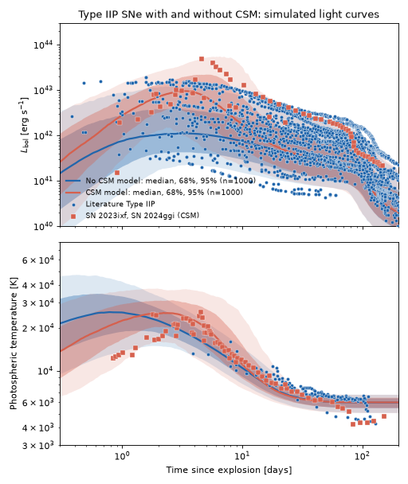
The events with CSM are shown on their own below, 300 draws with csm=1, against SN 2023ixf
[17] and SN 2024ggi [18]. The CSM pulse dominates the first days, and after
it the events follow the plateau and tail of the others.
(Source code, png, hires.png, pdf)


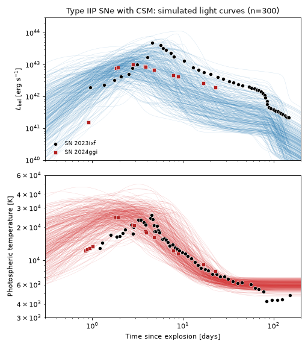
UV Calibration
The plots below overlay the Swift/UVOT UVW1 (2600 Å) and UVW2 (1928 Å) light curves of Type IIP supernovae from the Swift Optical/Ultraviolet Supernova Archive (SOUSA) on 100 random draws from the priors above, integrated through the corresponding UVOT transmission curve from the SVO Filter Profile Service. Both are shown as \(\nu L_\nu\) in the observed band with no K-correction. Archive supernovae are drawn at random, and the legend gives how many are shown. Only those with an estimated explosion date (black) are timed from explosion; the rest (grey) are timed from discovery, so they sit to the left of where the model places the same phase, by an amount that differs from event to event.
11 Type IIP supernovae have at least four UVW1 detections, and 9 have at least four UVM2 or UVW2 detections.
The blanketing parameters lam_c, beta_max, T_b and dT were set against these light curves, by
comparing the model’s peak \(\nu L_\nu\), the UVW1 minus UVW2 colour and the late-time level with the data.
These are ordinary Type IIP, so the comparison is with the model’s events without CSM (csm=0). At the
object level the model scatters 0.20 dex about the data, and at the population level the median offsets are
below 0.2 dex in all three bands from day 0.6 to 15. The Swift supernovae are well observed and so brighter
than the population, so the model sits below their medians. The late-time UV is probably faint in the model
(see the limitations above), and the UVOT bands do not reach the UVEX FUV band, so the UV there is an
extrapolation.
(Source code, png, hires.png, pdf)


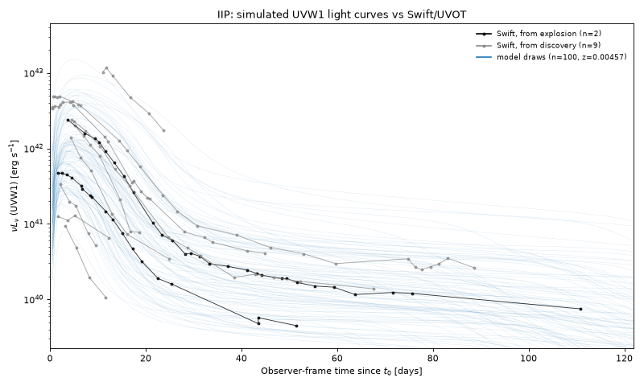
(Source code, png, hires.png, pdf)


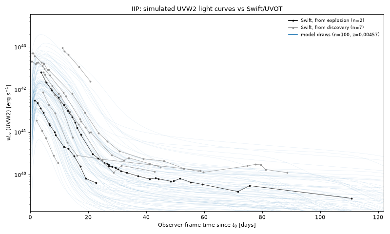
The events with CSM (csm=1) are compared with the two Swift supernovae of that kind (SN 2023ixf and SN
2024ggi, timed from explosion), below. The UV was not fit. The Swift light curves of SN 2023ixf begin at 24 d,
so it constrains only the late UV.
(Source code, png, hires.png, pdf)


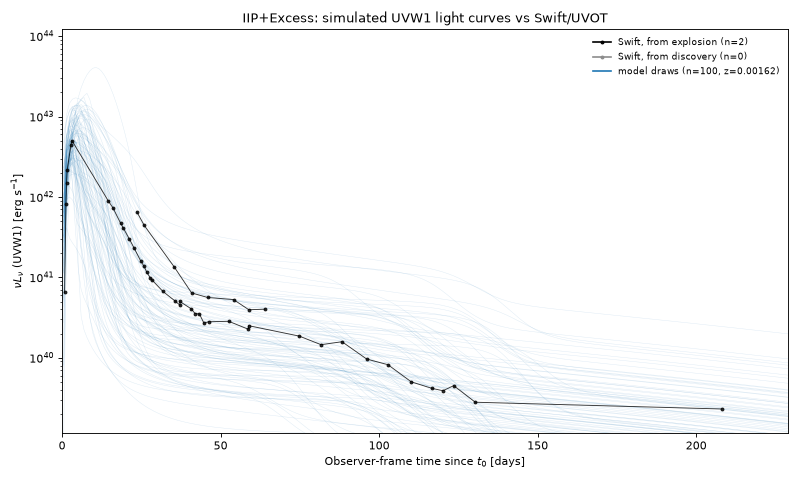
(Source code, png, hires.png, pdf)


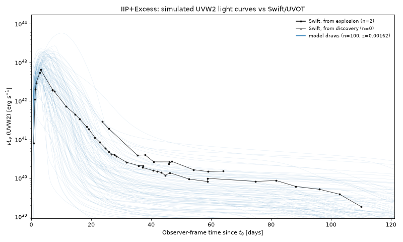
Luminosity Function
The distribution of peak absolute magnitude in the Johnson V band, from 10000 draws of the SED priors above. Each draw’s rest-frame band light curve is measured at its brightest point. The curve is normalized per event, so it integrates to 1 over \(M_V\): multiply it by the rate to get a volumetric luminosity function, in events per comoving volume, time and magnitude. The shaded bands are the 68% (Clopper-Pearson) intervals of each bin, and bins with no events are not drawn. \(M_V\) is the AB magnitude at 10 pc of a spectrum flat in \(L_\nu\) that has the same Johnson V band luminosity, a fixed conversion of the luminosity rather than the photon-weighted magnitude of the SED itself.
The curve is of the whole population, with and without CSM, and the points are the luminosity
function of SNe II of ASAS-SN, which the L50 prior was set against (so this is a check of that choice, not
an independent test). Its rate has a normalization that is not ours, so
only its shape is compared: the points are scaled to unit area over the magnitudes they cover and then by the
fraction of the model’s events in that range. Where the shapes agree, the points lie on the model’s curve.
The ASAS-SN class includes all hydrogen-rich types, not only the plateau events, and its points are the bright
side of a magnitude-limited sample, so the faint end of the model is not tested.
(Source code, png, hires.png, pdf)


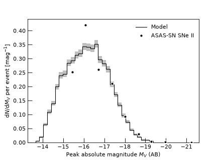
Observability Summary
The plots below show how the redshift limit follows from the SED. We draw 1000 sets of parameters from the priors above and evaluate each of them across a grid of redshifts, in the UVEX FUV and NUV bands, over the whole rest-frame light curve. The left panel shows each draw’s peak apparent AB magnitude, in whichever band is brighter, against redshift: a draw is detectable out to the redshift where its line crosses the UVEX 1 Dwell limit of \(m<24.5\). The right panel shows the redshift beyond which, with 95% confidence, at most 1% of the population is detectable, as a function of the magnitude limit. The redshift limit adopted above, \(z=1.07\), is its value at \(m=24.5\), rounded up and derived on a finer grid than this plot’s.
The limit bounds the fraction of the population that is detectable beyond it, not the fraction of detected events, and it does not include Milky Way extinction or sky position.
This limit is an extrapolation. It comes from the hot early photosphere, whose UV the model does not blanket while it is above \(\sim10^4\) K, and from the CSM events, whose pulse is bright and hot. At \(z\approx1.07\) the UVEX FUV band (1333 to 1817 Å) samples rest-frame wavelengths of about 640 to 880 Å, shortward of the hydrogen Lyman limit, and the NUV band (2050 to 2735 Å) about 990 to 1320 Å. The model has no cutoff at the Lyman limit, and no data constrain it below the 1900 Å rest-frame edge of the Swift/UVOT bands, so where a real spectrum is cut off would lower the limit. The model has no host dust. The previous limit of \(z=0.51\) (0.53 for the separate excess population this model replaces) came from a model whose UV was suppressed at all epochs, so the increase is a property of the new SED, not a measurement.
(Source code, png, hires.png, pdf)


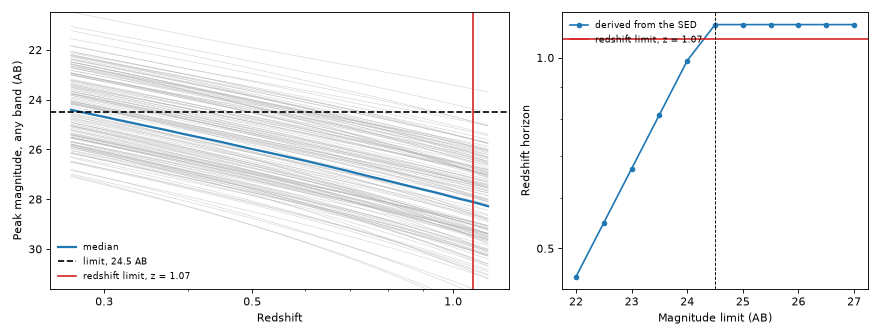
The anticipated rate detectable by UVEX at these limits is as follows, assuming that any event above the \(m<24.5\) limit is detectable, and that the population is isotropic and homogeneous in comoving volume out to its redshift limit:
(Source code, png, hires.png, pdf)


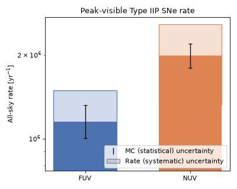
Type IIb supernovae are core-collapse explosions of massive stars that have been stripped of most,
but not all, of their hydrogen envelope. Many show a double-peaked light curve: an early, hours-
to-days-long flash powered by the shock heating and subsequent cooling of the extended envelope,
followed – after a dip – by a broader, weeks-long peak powered by radioactive
\(^{56}\mathrm{Ni}\) decay, the same mechanism that powers most other core-collapse SN light
curves. Others show only the single, radioactively powered peak, with no resolved early bump.
Where ShockCoolingIIb models only the shock-cooling
component, cut at the edge of its regime of validity, this population adds the radioactively powered
main peak and evaluates the shock cooling at every epoch, so a single SED spans the whole light curve.
This population is implemented by
TypeIIbSNe, pairing
TypeIIbSED with the rate/duration metadata
described below.
Note
The shock cooling priors are those of MoragShockCoolingSED,
except that radius and envelope_mass are wider (see the UV calibration below), and the nickel priors are those of the Type Ib SED
(TypeIbSED, without its host dust). Neither is a fit to Type IIb events, except that the
nickel mass was set against the ASAS-SN luminosity function of SNe IIb (see the luminosity function below), and
the duration below was derived for an earlier, phenomenological Type IIb SED. It needs to be
recomputed.
Quick Facts
Quantity |
Value |
Source |
Notes |
|---|---|---|---|
Rate |
\(R_\mathrm{CC}(z) = k\,\psi_\mathrm{UV}(z)\); Type IIb 10.3% of \(R_\mathrm{CC}(z)\) |
Strolger et al.[1], Madau and Dickinson[2], Shivvers et al.[4] |
Tracks the cosmic star-formation history. Shivvers et al.[4] find IIb is
\(34.0\pm11.1\%\) of the stripped-envelope (SESNe) rate, which is itself
\(30.4^{+5.0}_{-4.9}\%\) of the total core-collapse rate, so the Type IIb fraction
of the CC rate is \(0.340\times0.304=0.103\). Combined in quadrature with
Strolger et al.[1]’s \(+27\%/-31\%\) normalization uncertainty, this gives
|
Redshift limit |
\(z = 1.25\) |
– |
Redshift beyond which, with 95% confidence, at most 1% of events drawn from the SED’s priors are brighter than 24.5 AB (the UVEX 1 Dwell limit) in either UVEX band, rounded up. Only epochs after 0.1 d are considered, because the shock cooling luminosity grows without bound toward \(t\to0\). See the observability summary below. |
Duration |
200 days |
– |
Long enough to cover the shock-cooling peak (where present), the dip, the radioactive main
peak, and its subsequent decline – unlike
|
SED Model
TypeIIbSED adds two emission components,
The first is the full shock cooling SED of Morag et al.[19]
(MoragShockCoolingSED), which dominates the first
days. It is evaluated at every epoch, without the cut at the edges of that paper’s regime of
validity, so it does not switch off after a day or two and the luminosity is not zero through the
trough. The price is that the formulas are not valid before \(t_\mathrm{min}\), where the
luminosity grows without bound toward \(t \to 0\). The second is the line-blanketed Arnett
nickel light curve of TypeIbSED, which produces the
main peak at about 20 days. Together they give a luminous decline after breakout, a trough, and a
rise to the nickel peak. The two components are independent, so nothing ties the envelope mass of the
shock cooling to the ejecta mass of the nickel component.
Parameter priors
The shock cooling parameters have the priors of
MoragShockCoolingSED, and the nickel and
line-blanketing parameters those of TypeIbSED (which
has host dust, that this model does not), except M_Ni. The line blanketing is that of Type Ib, set against
Swift/UVOT (see the UV calibration below), and applies to the nickel component only: the shock cooling
component is an unblanketed blackbody.
Parameter |
Symbol |
Prior |
Notes |
|---|---|---|---|
|
\(v_*\) |
LogNormal(\(\sigma\)=0.35) around \(6.3\times10^8\) cm/s |
Scale velocity of the shock near the stellar surface. |
|
\(R\) |
LogNormal(\(\sigma\)=1.1) around \(6\times10^{12}\) cm |
Progenitor stellar radius. Wider than the Morag value (0.85): see the UV calibration below. |
|
\(\kappa\) |
Fixed (0.34 cm2 g-1) |
Electron-scattering opacity of the shock cooling. |
|
\(M_E\) |
LogNormal(\(\sigma\)=1.3) around \(0.05\ M_\odot\) |
Hydrogen-rich envelope mass. Wider than the Morag value (1.0): see the UV calibration below. |
|
\(M_C\) |
LogNormal(\(\sigma\)=0.35) around \(2.8\ M_\odot\) |
Core mass. |
|
\(M_\mathrm{Ni}\) |
LogNormal(median 0.02 \(M_\odot\), \(\sigma_{\ln}\)=1.1), bounds 0.005 to 1.5 \(M_\odot\) |
Nickel-56 mass, set against the ASAS-SN luminosity function of SNe IIb. It is below the Type Ib median (0.06 \(M_\odot\)), and was not checked against measured Type IIb nickel masses: see the luminosity function below. |
|
\(M_\mathrm{ej}\) |
TruncatedNormal(mean=2.3, \(\sigma\)=2.2, bounds 0.1 to 20 \(M_\odot\)) |
Ejecta mass. |
|
\(v_\mathrm{ej}\) |
TruncatedNormal(mean=9.6, \(\sigma\)=3.5, bounds 4 to 25; units of \(10^3\) km/s) |
Constant ejecta velocity. |
|
\(\kappa\) |
Fixed (0.07 cm2 g-1) |
Grey optical opacity of the ejecta. |
|
\(\kappa_\gamma\) |
Fixed (0.04 cm2 g-1) |
Opacity to high-energy photons. |
|
\(T_\mathrm{floor}\) |
TruncatedNormal(mean=5000 K, \(\sigma\)=1000 K, bounds 3000 K to 10000 K) |
Minimum photospheric temperature of the nickel component. |
|
\(\nu_\mathrm{break}\) |
Fixed (\(1.4\times10^{15}\) Hz) |
Frequency blueward of which line blanketing suppresses the nickel component. The Type Ib value. |
|
\(\beta\) |
Fixed (3) |
Power-law index of the line-blanketing suppression. The Type Ib value. |
Simulated Light Curves
The plot below draws 300 random parameter realizations from the priors above and shows the resulting bolometric light curves and photospheric temperatures, overlaid with the observed light curves and temperatures of several Type IIb SNe [20][21][22][23][24][25]. The spread shows the early shock cooling decline, the trough and the nickel peak, with the depth of the trough set by the shock cooling parameters. The shock cooling is evaluated outside its regime of validity at the earliest times, so the very early luminosity of the brightest draws should not be read as a prediction.
(Source code, png, hires.png, pdf)


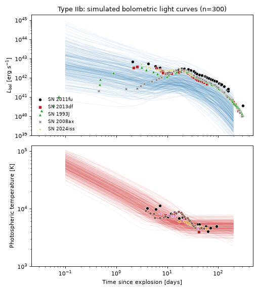
UV Calibration
The plots below overlay the Swift/UVOT UVW1 (2600 Å) and UVW2 (1928 Å) light curves of Type IIb supernovae from the Swift Optical/Ultraviolet Supernova Archive (SOUSA) on 100 random draws from the priors above, integrated through the corresponding UVOT transmission curve from the SVO Filter Profile Service. Both are shown as \(\nu L_\nu\) in the observed band with no K-correction. Archive supernovae are drawn at random, and the legend gives how many are shown. Only those with an estimated explosion date (black) are timed from explosion; the rest (grey) are timed from discovery, so they sit to the left of where the model places the same phase, by an amount that differs from event to event.
Only the nickel component of this SED is line-blanketed, with the values set for Type Ib (not refit to Type IIb), so the UV in the first days is set by the unblanketed shock cooling component. 7 Type IIb supernovae have at least four UVW1 detections, and 6 have at least four UVW2 detections.
Nine Type IIb supernovae have Swift detections, all timed from discovery. The peak \(\nu L_\nu\) of each, in
the model’s distribution of peaks at \(z=0.01\) (taken over the epochs the supernova was observed), has a
median percentile of about 40% in UVW1, so the model is not low overall. The events span 3 dex in peak
luminosity. The radius and envelope_mass priors of the shock cooling were widened (from 0.85 and 1.0 to
1.1 and 1.3 in \(\sigma_{\ln}\)) to widen the model’s 95% range of UV peaks from 2.5 dex to 2.9 dex. SN 2013cu,
which has the brightest peak (\(\log\nu L_\nu=43.2\) in UVW1), remains at about the 99th percentile of the model,
which one event in nine is unlikely to do by chance, so the model’s bright tail is probably still too short. The
Type Ib values of the line blanketing were not refit to these events, and
the data are too few to constrain it.
(Source code, png, hires.png, pdf)


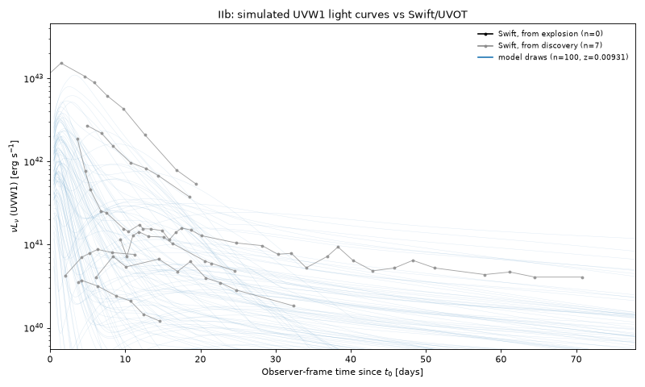
(Source code, png, hires.png, pdf)


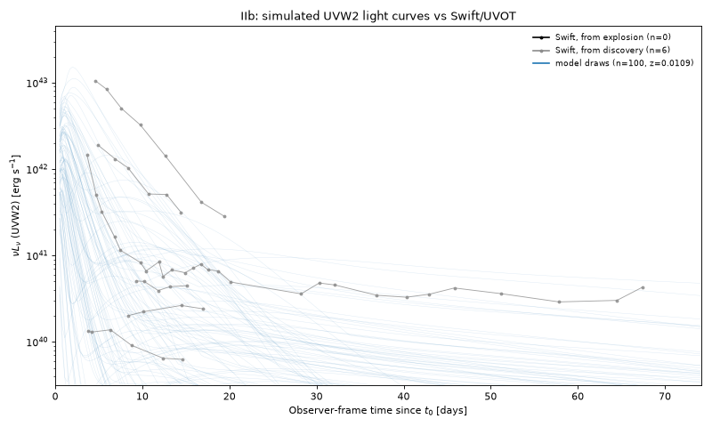
Luminosity Function
The distribution of peak absolute magnitude in the Johnson V band, from 10000 draws of the SED priors above. Each draw’s rest-frame band light curve is measured at its brightest point. The curve is normalized per event, so it integrates to 1 over \(M_V\): multiply it by the rate to get a volumetric luminosity function, in events per comoving volume, time and magnitude. The shaded bands are the 68% (Clopper-Pearson) intervals of each bin, and bins with no events are not drawn. \(M_V\) is the AB magnitude at 10 pc of a spectrum flat in \(L_\nu\) that has the same Johnson V band luminosity, a fixed conversion of the luminosity rather than the photon-weighted magnitude of the SED itself.
The points are the luminosity function of SNe IIb of ASAS-SN, which the M_Ni prior was set against (so this
is a check of that choice, not an independent test). They are absolute rates, and the integrated rate over them,
\(9.5\times10^{-6}\) SNe/Mpc3/yr, is within 12% of the rate adopted above, so the plot shows them
scaled by shape, as for Type IIP, but no normalization was fit. The nickel mass is the only parameter
that matters here: it has a correlation of 0.8 with the peak luminosity, and the shock cooling and ejecta
mass parameters are weak knobs. There are seven points, with fractional errors that are not given, and they are
not smooth (the \(M_V=-17.4\) point lies below both neighbours), so the fit is limited to about 0.35 dex rms
by the data. It prefers median nickel masses of 0.01 to 0.02 \(M_\odot\) with a wide scatter, and the adopted
0.02 \(M_\odot\) is the upper end of what the data allow. That is below the Type Ib median (0.06
\(M_\odot\)) and the 0.1 \(M_\odot\) that this model used before, and it was not checked against
nickel masses measured for Type IIb events. The model has too many events at \(M_V=-16.1\) and too few
at \(M_V=-15.4\), which has most of the observed rate.
(Source code, png, hires.png, pdf)


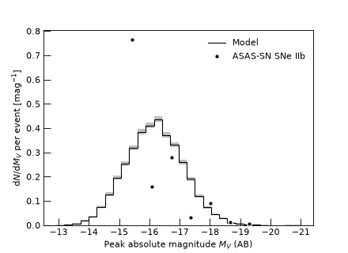
Observability Summary
The plots below show how the redshift limit follows from the SED. We draw 1000 sets of parameters from the priors above and evaluate each of them across a grid of redshifts, in the UVEX FUV and NUV bands, over the whole rest-frame light curve. The left panel shows each draw’s peak apparent AB magnitude, in whichever band is brighter, against redshift: a draw is detectable out to the redshift where its line crosses the UVEX 1 Dwell limit of \(m<24.5\). The right panel shows the redshift beyond which, with 95% confidence, at most 1% of the population is detectable, as a function of the magnitude limit. The redshift limit adopted above, \(z=1.25\), is its value at \(m=24.5\), rounded up and derived on a finer grid than this plot’s. Epochs earlier than 0.1 d are excluded from the light curve, because the shock cooling luminosity of this SED grows without bound toward \(t\to0\).
The limit is set by the brightest early shock cooling peaks, which the Swift data constrain only weakly (see the UV
calibration above), and it rose from 0.79 to 1.25 when the radius and envelope_mass priors were widened.
It is an extrapolation.
The limit bounds the fraction of the population that is detectable beyond it, not the fraction of detected events, and it does not include Milky Way extinction or sky position.
(Source code, png, hires.png, pdf)


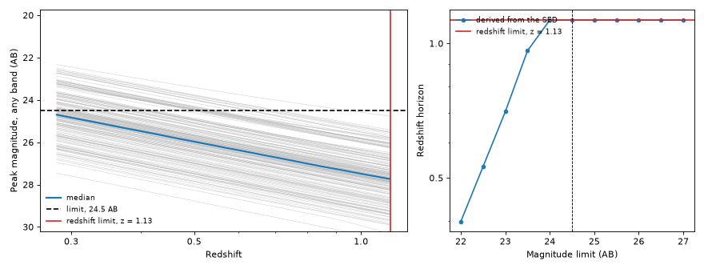
The anticipated rate detectable by UVEX at this limit is as follows, assuming that any event above the \(m<24.5\) limit is detectable, and that the population is isotropic and homogeneous in comoving volume out to its redshift limit:
(Source code, png, hires.png, pdf)


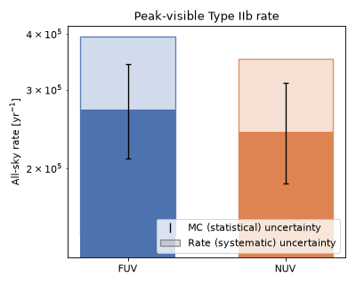